Urkrefter
Landsbyen Stonetop ligger oppå eldgamle ruiner, bygget for århundrer eller til og med årtusener siden av Skaperne Skaperne. Men det finnes ting i verden som var gamle da Skaperne var unge. Og det finnes ting som er eldre enn det igjen, eldre enn selve verden, større enn verden. Fremmede og ukjente ting. Urgamle ting og urkrefter, helt fra tidenes morgen.
Temaer
Velg eller slå 1, eller 2 og kombiner.
| 1 | Uendelighet, veldighet, det ufattelige, urtomrommet |
|---|---|
| 2 | Sannhet, renhet, kvintessens, skapelsens råstoff |
| 3 | Grunnkrefter: orden, kaos, tid, rom, tyngdekraft, lys, død osv. |
| 4 | Åndeverdenen: bevissthet, symboler og tanke, alle tings sammenheng |
| 5 | Sanne navn, maktord, tale som overskrider språket |
| 6 | Himmellegemer: bevegelsene deres, mysteriene deres, innflytelsen deres på verden |
| 7 | Paradoks: skjebne og fri vilje, årsakssløyfer, uendelighet, gjensidig utelukkende sannheter |
| 8 | Naturkrefter og formingen av verden: langsomme og subtile, voldsomme og katastrofale |
| 9 | Bindingen av Tingene Der Nede |
| 10 | Mytiske tider og mytiske dåder, guders og legenders fødsel og død |
| 11 | Lenge glemte folk/vesener, fra før Skapernes fremvekst |
| 12 | Portaler, muligheter, andre verdener, vesener/ting utenfor tid og rom |
Kroker
- En storslått konjunksjon av stjernene nærmer seg og varsler skjellsettende forandring.
- En meteoritt styrter ned ikke langt fra Stonetop.
- En lærd vender hjem fra et eldgammelt monument og forkynner vrøvl som smitter andres sinn.
- Et ritual kan bare utføres på et sted med urgammel makt.
- For århundrer siden ga Krigens ånd avkall på sin rolle og sine plikter og tok form som en tilbaketrukket gjeter for å leve et enkelt liv.
- En sovende titan – stor som et fjell, dekket av årtusener med jord, rusk og vekster – begynner å røre på seg.
- En klan av flyktninger fra ingen kjent egn kommer ut av portalen under Tårnruinen Tårnruinen.
Spørsmål
- Den Bleke Jegeren Den Bleke Jegeren forbindes med «månen», men finnes det andre måner? Hva forbindes de med?
- Hva får deg gjerne til å føle deg liten og ubetydelig?
- Tror du på skjebnen? Eller staker vi ut vår egen skjebne?
- Hvilket fremmedartet sted besøkte du en gang som tydelig var berørt av eldgamle, uhyggelige krefter?
Kosmologi
Mange sider ved verdenens kosmologi er med vilje holdt vage, slik at du og gruppen kan fylle dem ut etter behov. Her er noen ting å spørre om eller tenke over:
- Hvor mytisk er kosmosen deres? Er solen for eksempel en stjerne som verden går i bane rundt? Eller kjører Helior Helior, Dagbringeren vognen sin over himmelen? Eller hva?
- Svever det andre verdener i tomrommet? Kan de nås gjennom åndeverdenen eller portaler portaler?
- Hva ligger bortenfor den Siste Døren Døden og de udøde? Er livet etter døden likt for alle, eller venter ulike skjebner hver sjel?
- Hva er egentlig forholdet mellom de Første Skaperne, de store åndene, gudene til glemte folk og gudene som tilbes i dag?
- Utviklet livet seg over æoner? Eller befolket de Første Skaperne verden med mye av floraen og faunaen vi kjenner i dag? Eller hva?
- Hvor kom menneskeheten fra? Er vi eldre enn Skaperne, eller ble vi skapt av dem?
Svarene på disse spørsmålene avhenger av hvordan spillerne svarer på spørsmål om andre temaer, og av avgjørelser du tar om dem. Se særlig Aratis Aratis, Lovvokteren, Danu Danu, Jordmoderen, Helior Helior, Dagbringeren, Tor Tor, Regnmakeren, guder og religion Guder og religion, døden og de udøde Døden og de udøde, Skaperne Skaperne, Lygos og Sør Lygos og Sør og Stonetop selv.
De Første Skaperne
De var de første sinnene som kjente seg selv, de første vesenene som ga seg selv navn. De ble født av det kosmiske tomrommet, av lys og mulighet og det malende kaoset av intet og alt. De talte virkeligheten frem og la ned dens grunnleggende lover. De skapte verden og bandt Tingene Der Nede Tingene Der Nede.
De Første Skaperne dukker neppe opp direkte i spillet deres. For det meste tjener de som bakteppe, en forklaring på hvorfor ting er som de er. Noen kan ha blitt værende som det vi nå kaller guder Guder og religion, men som regel former de ikke lenger verden aktivt.
Kanskje har de glemt den helt.
Tingene Der Nede
Vesener av mørke, kaos og fordervelse, eldre enn selv de Første Skaperne. De er misunnelige og hatefulle og fulle av uendelig ondskap, og derfor bandt de Første Skaperne dem i jordens dyp.
Selv om de er fengslet, påvirker de fortsatt verden. De Grønne Herrene De Grønne Herrene påkalte dem da Fae Fae gjorde opprør. Tjenerne til Steinens Herrer Steinens Herrer bukket under for hviskingen deres og innledet Katastrofens tid Tingene Der Nede. Gravhaugbyggerne Gravhaugbyggerne søkte dem åpent og tilba dem som guder. Innflytelsen deres har avtatt i den nåværende tidsalderen Tingene Der Nede, men den henger fortsatt igjen.
Store ånder
Ufattelig mektige vesener, numinøse og storslåtte. De Første Skaperne laget noen som eksperimenter, noen som følgesvenner, noen som forvaltere av verden. Andre store ånder oppsto av seg selv, født av kosmos eller av dødelige veseners tro.
Mange av disse store åndene er fjerne, fremmede og uinteressert i verden (eller i det minste i denne verdenen). Andre er aktive, men former verden på subtile måter. Blant dem kan godt Kråkenes Frue Døden og de udøde være, og noen av eller alle de store gudene Guder og religion.
For å skape en stor ånd til spillet deres, bestem om den tilbes som en gud.
Gjør den det, skaper du den med fremgangsmåten for andre guder Guder og religion. Hvis ikke, velg eller slå 2 urgamle temaer og forestill deg vesenet kombinasjonen antyder. Tenk over hvorfor den ikke tilbes – er den ukjent, likegyldig, fremmed, eller hva?
Blir en av de store åndene aktiv i spillet deres, skriver du den opp som en trussel (et magisk vesen). Selv velvillige vesener med slik kosmisk makt kan ikke unngå å skape trøbbel.
Inkarnasjoner
De store åndene viser seg av og til direkte i verden. Slike inkarnasjoner blir gjerne skikkelser i myter og legender. For eksempler, se:
- Pileheksene Ferriers Myr
- Den nifingrede fremmede Tor, Regnmakeren hvis du antar at Tor er en stor ånd
- Den Bleke Jegeren Den Bleke Jegeren, hvis du bestemmer at han er et urgammelt vesen For å skape en inkarnasjon, fastslå først hvilken stor ånd den er en manifestasjon av.
Velg eller slå deretter for hvorfor den inkarnerte, manifestasjonen dens og 1-3 begrensninger.
Skriv den opp som et monster, og eventuelt som en trussel, med alle slags mektige trekk – slike vesener er ikke bundet av virkelighetens vanlige lover. Se eksemplene (forrige kolonne) for inspirasjon.
Vær forsiktig med å introdusere inkarnasjoner i spillet. De skal få verden til å føles rik og mystisk og hjelpe deg med å krydre spillerpersonenes liv med eventyr; de skal ikke overskygge spillerpersonene eller fungere som en praktisk utvei. Innblandingen deres skal alltid føles farlig, spent og komplisert.
| 1-2 | Som straff/bot/flukt |
|---|---|
| 3-4 | Fordi mektig magi tilkalte den |
| 5-6 | For å forfølge en agenda |
| 7-8 | Av nysgjerrighet/kjedsomhet/fortvilelse |
| 9-10 | Gjennom skjebnen eller et kosmisk uhell |
| 11-12 | For å lære, for å oppleve verden |
| 1-2 | En tilsynelatende vanlig person |
|---|---|
| 3-4 | Et tilsynelatende naturlig dyr |
| 5-6 | En ånd eller et annet mystisk vesen |
| 7-8 | En åpenbart overnaturlig person |
| 9-10 | Et monster eller et overnaturlig beist, kanskje en titan |
| 11-12 | Slå på nytt, men den viser seg som en gruppe eller mengde av resultatet |
| 1 | Skjønner ikke hva den er |
|---|---|
| 2 | Er underordnet en annen |
| 3-4 | Har et bånd |
| 5-7 | Er bundet av visse ukrenkelige regler |
| 8 | Kan bare inkarnere kort, under eller ved visse omstendigheter/tider |
| 9 | Er underlagt dødelige drifter/behov/ følelser/svakheter |
| 10 | Nekter å blande seg inn |
| 11 | Jaktes på av andre overnaturlige vesener |
| 12 | Kan ikke bruke makten sin uten alvorlige følger, for seg selv/verden |
Spillerpersonene gjennomsøker innvollene av Tårnruinen Tårnruinen etter bronsehjelmen som tjener som hylster for Sinnsjuvelen Sinnsjuvelen. I neste økt finner de sannsynligvis fangehullet Tårnruinen, og på et innfall bestemmer jeg at en av cellene holder en innesperret inkarnasjon.
Mer enn det har jeg ikke i tankene, så jeg slår to urgamle temaer. Jeg får 4 («åndeverdenen: bevissthet, symboler og tanke, alle tings sammenheng») og 12 («portaler, muligheter …»). Det høres ut som et vesen som river ned skillene mellom sinn, drømmer og virkelighet.
Derfra slår jeg 5 for hvorfor den inkarnerte («for å forfølge en agenda»), 4 for manifestasjonen («et tilsynelatende naturlig dyr») og 3 for en begrensning («et bånd»). Jeg tenker at den inkarnerte for å gjøre drømmer og ønsker til virkelighet. Jeg velger en ekstra begrensning: «Den kan ikke bruke makten sin uten alvorlige følger.» Den kom for å oppfylle ønsker, men i virkeligheten sprer den kaos – og derfor låste Stormfangeren den inne.
Nattergalen
HP 19; RUSTNING 5 (størrelse, motstandskraft), 1 mot svartjern (størrelse)
SKADE øreskjærende skrik med ulempe (nær, område, bråkete, ignorerer rustning)
SÆRLIGE EGENSKAPER alderløs; leser tanker; bundet til en bestemt evig blomstrende rosebusk et sted i Forbergene INSTINKT å oppfylle ønsker ingen har bedt om
- Trollbinde med den vakre sangen sin
- Fremkalle ens dypeste lengsler
- Gjøre disse lengslene virkelige i verden, hvor urealistiske de enn er, uansett følgene
- Flagre bort, dra et annet sted
Slipper spillerpersonene den løs, skriver jeg den opp som en trussel (en plage) som sprer kaos
i hele regionen.
Arkonter
Arkonter er konstruerte ånder Villmarkas ånder, laget av de Første Skaperne eller en av de store åndene som voktere og håndhevere av den kosmiske orden.
Begynn med grunnstatblokken for arkonter nedenfor. Velg eller slå for formålet, manifestasjonen og opptil 3 krefter. Juster statblokken etter disse valgene eller resultatene, og skriv minst ett trekk som speiler formålet og ett som speiler manifestasjonen (med mindre den manifesterer seg som et konstrukt/en levende statue).

GrunnarkontHP 23; Rustning 5 (motstandskraft, mangler vitale organer), 1 mot svartjern
Skade fysiske slag med fordel (tett, rekkevidde, kraftfull)
Særlige egenskaper alderløs, immun mot elementene, oppfatter tanke og materie, kan alle språk
Instinkt etter formålet
Arkonter har unike navn med usannsynlige lydkombinasjoner, og majestetiske og gåtefulle titler. For eksempel: Qrenithar, Morgengryets Herold; Klythorim, Tidens Pil;
Xezaltran den Uunngåelige; Jharvakus, det Tause Vitnet; Phrysthalin, Vektskålenes Bærer; og Lyvontis, den Ubestikkelige Dommer.
For et eksempel, se Tcaventes, Lenke og Nøkkel.
| 1 | Å oppsøke og tilintetgjøre |
|---|---|
| 2 | Å finne, dømme og straffe |
| 3-4 | Å fange/hente tilbake |
| 5-6 | Å advare/refse/korrigere |
| 7-12 | Å holde vakt og beskytte |
| 1-2 | Ren energi/lys/ild: skades bare av svartjern |
|---|---|
| 3-4 | Et konstrukt/en levende statue: -ånd, Rustning 6, eller 4 mot svartjern |
| 5-6 | En masse av damp/støv/aske/jord/ osv.: tar halv skade unntatt fra svartjern |
| 7-8 | En krusning i virkeligheten: +snikende, skades bare av svartjern |
| 9-10 | Noen hentet ut av sinnet til den den har med å gjøre |
| 11-12 | Et umulig vesen, surrealistisk og underlig og ærefryktinngytende |
| 1 | Slår ned på avstand (fjern eller nær, område) |
|---|---|
| 2 | Manipulerer omgivelsene |
| 3 | Teleporterer seg, eller nesten |
| 4 | Gjennomskuer bedrag, tvinger frem sannheten |
| 5 | Lammer/døver/blender/hemmer fiender |
| 6 | Merker/forbanner/binder mål |
| 7 | Tvinger dødelige/mindre ånder til å __ |
| 8 | Ser fremtiden, sannsynlige utfall |
| 9 | Skader våpen som brukes mot den |
| 10 | Opphever/fjerner magiske virkninger |
| 11 | Demper følelser, skaper fred |
| 12 | Noe særlig, unikt, tematisk |
Søkeren får tak i arkanumet De Usigelige Ordene De Usigelige Ordene og låser til slutt opp mysteriene deres, bare for så å merke en konsekvens der et «evig, eldgammelt Ordenens vesen» oppsøker dem og irettesetter dem. Det høres ut som en arkont, synes jeg!
Jeg velger formålet «Å advare/refse/ korrigere» og slår 2 for manifestasjonen («ren energi/lys/ild»). For krefter slår jeg 3 («teleporterer seg, eller nesten») og velger både «lammer/døver/ blender/hemmer» (den er laget av lys!) og «opphever/fjerner magi». Jeg grubler litt og skriver opp følgende:
Livrothos, Den Rensende Flammen
HP 23, RUSTNING 1 (mangler vitale organer), skades bare av svartjern
SKADE hvit flamme med fordel (hånd, tett, kraftfull, blodig, 3 gjennomborende)
SÆRLIGE EGENSKAPER: alderløs, immun mot elementene, oppfatter tanke og materie, kan alle språk
INSTINKT: å rette opp feil
- Merke magi som har kommet ut av kontroll
- Vise seg som en søyle av hvit flamme, smertefull å se på
- Forsvinne, kanskje dukke opp et annet sted
- Brenne magien bort fra verden
Titaner
Legendene forteller om en tid da dyr og vesener av umulig størrelse streifet om i verden. Guden Tor Tor, Regnmakeren skal ha drept tre slike beist, og alle kjenner til skjelettet i fjellsiden på Titanbein Titanbein.
Kanskje satte de Første Skaperne disse titanene i verden. Kanskje utviklet de seg i den unge verdens yrende livskraft. Noen kan ha vært inkarnasjoner av de store åndene, eller emanasjoner Tingene Der Nede av Tingene Der Nede.
Uansett streifer ikke titaner lenger om i verden slik de en gang gjorde. Crombil Crombil kan være en, men den våkner bare med noen tiårs mellomrom. Suileach Redselselva kan være en annen, men den er innesperret i Redselselva. De skjulte landene rundt Den Gylne Eik Den Gylne Eik er fulle av kjempemessige beist, men om de virkelig er titaner, er opp til deg.
Det kan finnes andre slike titaner, gjemt bort i avsidesliggende kroker av verden, der de sover bort århundrene og venter på å reise seg igjen.
Steder
Det finnes steder i verden som er merket eller skjemmet av urgammel makt. Må et slikt sted etableres, kombinerer du terrenget det ligger i, med et kjennemerke.
| 1 | Et slør som skjuler det for verden |
|---|---|
| 2-3 | Dramatisk geologi (en tind, et krater, en kløft, en geysir osv.) |
| 4 | Ødeleggelse/stråling |
| 5 | Restene av en titan |
| 6-7 | Megalitt(er)/helleristninger/runer/hulemalerier/osv. |
| 8-9 | Ruin(er) etter Skaperne, bygget nær eller rundt det |
| 10 | Mystisk(e) byggverk, plassert der av urgamle vesener |
| 11-12 | Slå to ganger og kombiner |
Når selve stedet er etablert, velg eller slå for et tema, et opphav og 1-3 trekk som gjør det interessant.
| 1-2 | Hensikten til en (de) store ånd(ene) |
|---|---|
| 3-4 | Et sammenløp av geomantiske/kosmiske/ himmelske krefter |
| 5-6 | En konflikt mellom mytiske vesener |
| 7-8 | Døden til et urgammelt vesen |
| 9-10 | Nærværet av en urgammel artefakt |
| 11-12 | Virkningen (vellykket eller ikke) av en mektig besvergelse eller et kunstverk |
| 1 | En arkont som våker over det eller det det rommer |
|---|---|
| 2 | Et fanget urgammelt vesen eller en emanasjon |
| 3 | En overflod av visse ånder |
| 4 | Skyggen av en død gud eller et urgammelt vesen, lett å kalle frem |
| 5 | Anomalier (tidssløyfer eller tidsforskyvninger, romlige forvrengninger, underlig tyngdekraft, tanker som høres høyt osv.) |
| 6 | En tynn grense mot åndeverdenen |
| 7 | En portal, eller et sted der det kan bli en |
| 8 | En kilde til makt; et godt sted å utføre bestemte typer magi |
| 9 | Syner/varsler/profetier/innsikter, som noen ganger skjenkes besøkende |
| 10 | Nyttig eller verdifull flora, noe underlig som bare finnes her |
| 11 | Skapelsens råstoff: svartjern, livets vann, urflamme osv. |
| 12 | En eller flere artefakter av urgammel makt |
Ligger et slikt sted nær områder som er eller en gang var befolket, tenk over hvordan lokalbefolkningen forholder seg til det (ærbødighet, ærefrykt, redsel, unnvikelse osv.), og hvilke andre spor de kan ha etterlatt.
Årstidene Skifter, og spillerpersonene får «interessante nyheter». Jeg vil gi dem et spor til De Usigelige Ordene De Usigelige Ordene, som finnes på et urgammelt sted i Hvithuggfjellene Hvithuggfjellene.
et kjennemerke («ruin etter Skaperne»). I Hvithugg er det sannsynligvis en ruin etter Rimfrostens Herrer.
Jeg slår 10 for tema («mytiske tider, guders og legenders fødsel og død») og 8 for opphav («døden til et urgammelt vesen»). For trekk slår jeg 4 («skyggen av en død gud …») og velger «en eller flere artefakter av urgammel makt» (De Usigelige Ordene). Jeg skaper ruinen etter Rimfrostens Herrer med tabellene på Rimfrostens Herrer, og den døde guden med stegene på Guder og religion.
Jeg ser for meg et høytliggende sted der en demon drepte Nangbu – en gudinne for skrift, visdom og profeti. Rimfrostens Herrer hogg et tempel inn i skråningen for å ære henne og samtale med skyggen hennes, men snøskred begravde tempelet. Det som er igjen, er en fjelleng med et sted der man noen ganger kan høre en hviskende stemme.
Som interessante nyheter tenker jeg at spillerpersonene får tak i en skriftrull som beskriver dette tempelet for Nangbu, og hvordan den døde gudens skygge bor der og skjenker visdom og profetier som gaver til dem som ber (De Usigelige Ordene).
Andre steder med urgammel makt
- En liten innsjø: kald, sur, uten liv. Når tåken ligger tett, forbinder den seg med andre tider, steder eller virkeligheter.
- En ås med utsikt over en elv, der en emanasjon Tingene Der Nede er spiddet på en stang av svartjern. En arkont skjuler åsen og fangen fra verden.
- Foten av et rustent metalltårn, 1,8 m bredt, som reiser seg over en frodig eng som myldrer av naturånder. Under ligger knoklene etter en titan begravet.
- En veltet megalitt, halvt sunket ned i torv og myr. Når stjernene står riktig, kan en dødelig her stille ett spørsmål og få et fullstendig, overveldende svar.
- En ensom tind der ens ånd, om man ikke passer seg, trekkes ut av kroppen og opp i tomrommet.
Jeg slår 4 på terrengtabellen for Hvithugg («vasstrukken jord, frossen eller gjørmete») og 9 for noen få blokker av Skaper-hogd stein som stikker opp av gjørmete jord. Det er en stillhet i luften, i
- En underjordisk bue merket med runer, som åpner seg mot en lang, rett hall. Gangen er en sløyfe; du kommer alltid tilbake til der du begynte.
- Mange fordervede steder Tingene Der Nede
- Visse kamre under Tårnruinen Tårnruinen.
- Den Gylne Eik Den Gylne Eik.
- Bunnløsbrønnen Labyrinten.
- Titanbein Titanbein, kanskje.
- Kanskje Tors Neve Hvithuggfjellene?
- Muligens selve Steinen Landsbyen Stonetop.
Portaler
Det finnes steder rundt om i verden som berører hverandre på et grunnleggende plan, selv om de ligger hundrevis av mil fra hverandre.
Skaperne kunne lage portaler på slike steder, som tillot øyeblikkelig reise mellom dem. Man kan finne en slik portal …
- under Tårnruinen Tårnruinen
- i Labyrinten Labyrinten
- skjult i nærheten av De Tre Heksekretsers Sjø De Tre Heksekretsers Sjø
- blant ruinene av Vor Svetelik Vor Svetelik
- oppe på Tors Neve Hvithuggfjellene, kanskje
- kanskje i visse ruiner nede i Lygos og Sør Lygos og Sør
- hvor som helst ellers du synes gir mening.
Portaler kan aktiveres med Å Åpne Veien Å Åpne Veien, som krever at man innskriver én portals tegnrekke innenfor tegnene til en annen.
Lærer spillerpersonene å bruke portaler, kan de ønske å lage nye. For å gjøre det må de:
Skapernes portaler var trygge og stabile, men mangelfulle eller skadde portaler er fryktelig farlige. En kan eksplodere, rive de reisende i filler og/eller åpne en rift urflamme i verden. Se den sprukne portalen Vor Svetelik i Vor Svetelik for et eksempel.
 Svartjern
Svartjern
Det finnes noen få sjeldne årer av dette metallet i verden, men for det meste hentes det fra meteoritter. Det er fullstendig og aldeles immunt mot magi.
- Fae Fae reagerer på det som på jern, bare verre – berøringen trevler opp magien deres, og de tar + skade (blodig, ignorerer rustning) av det
- Ånder kan ikke røre det, kanskje ikke engang oppfatte det
- Det kan skade selv ulegemlige former for manifesterte ånder Villmarkas ånder, men gjør ingen virkelig skade på selve ånden
- Det skader eller ødelegger enhver åpen portal det berører, og fører ingensteds
- Besvergelser, ritualer og annen magi kan ikke påvirke det, trenge gjennom det, oppdage det eller oppfatte ting det omslutter
Når spillerpersonene støter på noe, velg eller slå for formen:
| 1-2 | Malm/klump/meteoritt |
|---|---|
| 3-4 | Råmateriale (spole/barre/stang/osv.) |
| 5-6 | Amulett/talisman/smykke/symbol |
| 7-8 | Verktøy (spiker/hammer/tang/osv.) |
| 9-10 | Våpen/skjold/rustning |
| 11-12 | Konstruksjon (dør/kledning/trone/ osv.), sannsynligvis ubevegelig |
Velg eller slå for størrelsen og Verdien for dem som forstår hva det er. For bearbeidede gjenstander av svartjern legger du grunnverdien deres til det som står nedenfor. Et sverd (Verdi 1) av svart◇jern vil for eksempel ha Verdi 3.
| 1-4 | En liten gjenstand/mengde (Verdi 1) |
|---|---|
| 5-8 | En gjenstand/mengde (Verdi 2)◇ |
| 9-11 | En ◇◇ gjenstand/mengde (Verdi 2) |
| 12 | En ubevegelig gjenstand/mengde (Verdi 3 minst) |
Svartjern er sterkt og hardt som stål og bearbeides omtrent på samme måte. Det er litt tungt og holder ikke fullt så skarp egg. Svartjernsvåpen har ikke «x gjennomborende», men en stridshammer av svartjern vil likevel ha 2 gjennomborende.
Artefakter
 Diverse skatter
Diverse skatter
- ◇ Steiner med forsteinede skjell (Verdi 0), funnet langt fra noe vann
- En stabel tinnplater med utstansede ◇ sjablonger; lagt riktig viser de tegnene til en bestemt portal (Verdi 1, eller 3 for riktig kjøper)
- En pung med underlige hvite mynter med ◇ underlige symboler, mye lettere og hardere enn man skulle tro (Verdi 1, kanskje?)
- En … spydspiss (?), kilt dypt inn i grunnfjellet, som skinner med evig stjernelys (hånd, magisk, vakker, Verdi 2)
- Et sølvbeger (Verdi 2), bulket ◇ og anløpet, gravert med bilder av monstre som fanges i en kule
- En 2,4 m høy statue av en ukjent gudinne som bærer stjerner og måner i sine mange hender (ubevegelig, skjør, Verdi 2)
- En juvel av blå, krystallisert flamme; kjølig å ta på, men smelter metall og tenner på med tiden (farlig, Verdi 3)
- En ◇◇ ringbrynje av svartjern (2 rustning, varm, tungvint, Verdi 4), fullstendig immun mot magi
- Et forlatt steinbrudd med rent hvit stein, slik du trenger til en portal; oversvømt, men fortsatt fullt av godt materiale
En juvelbesatt hjelm
◇, magisk, bråkete, farlig, bruk Av bronse, medtatt og prydet med syv innfatninger, der bærer purpurfargede juveler som summer illevarslende. Når du tar på deg hjelmen, fornemmer du juvelenes kraft og hvordan de brukes, men du hører ingenting for den uopphørlige summingen.
Når du slipper løs en juvels kraft, velg et mål du kan se, og slå +WIS: på 10+ fryses målet ditt i tid og rom så lenge du bærer hjelmen og holder fokus; på 7-9 må du fokusere i noen sekunder, men så inntreffer virkningen som ved 10+.
Så lenge målet ditt forblir fryst, summer juvelen stadig høyere, så det gjør vondt. Når virkningen opphører, smuldrer juvelen til støv.
Når du prøver å holde fokus, slå
+CON: på 10+ går det bra inntil videre; på 7-9 merker du enten en svakhet eller lar virkningen opphøre; på 6- merker du en svakhet og lar enten virkningen opphøre eller spør spillederen hvordan tid og rom begynner å gå av hengslene rundt deg.
Mens målet er fryst, er det (og alt det bærer på seg) ukrenkelig – det kan ikke skades, flyttes eller påvirkes på noen annen måte. Det slutter seg til tidslinjen igjen som om ingen tid hadde gått for det, med det momentet det hadde fra før.
En forseglet amfora
En keramikkrukke med to hanker og et voksforsegl.
Inni er livets vann, vannets kvintessens, så rent at det vasker bort all urenhet, fordervelse, gift eller sykdom fra enhver levende skapning. Det blir tilsølt og mister kraften når det brukes, eller om det står uforseglet i mer enn et minutt eller så.
Selve amforaen er et perfekt kar: så lenge den er forseglet, vil intet stoff i den råtne, gå i forråtnelse eller på annen måte bli skjemt.
Et forsteinet horn
En spiralformet ting, kanskje 60 cm lang, restene etter en for lengst forsvunnet inkarnasjon Store ånder. De som er følsomme for åndeverdenen, kan fornemme den gjenværende, strålende kraften.
Når du bærer det forsteinede hornet, har du fordel på ethvert trekk for å imponere, skremme eller true en ånd (selv om det ikke gir noen særlig evne til å kommunisere med ånder i utgangspunktet). Slår du 6- på et slikt slag, kan ånden velge å ødelegge hornet og avslutte virkningen, i tillegg til hva enn spillederen sier.
 Små arkana
Små arkana
Velg 1 eller la noen slå Skjebneterningen.
| 1 | Et tidsslitt budskap |
|---|---|
| 2 | En … nøkkel? Øyet, Åpnet |
| 3 | En smuldrende bue |
| 4 | En sølvskinnende signetring |
| 5 | En altfor stor krone |
| 6 | Et puslespillskrin av metall |
Store arkana
Følgende er (eller kan være) knyttet til urkrefter.
- De Usigelige Ordene De Usigelige Ordene
- Stormmerkene Stormmerkene
- Norubas Iskule Norubas Iskule
Farer
Naturkrefter
- Uvær, voldsomt vær, lyn Tor, Regnmakeren, flom
- Snøskred Hvithuggfjellene, steinras og jordras Trappelandet
- Præriebrann Sletten ute av kontroll
- Vulkansk aktivitet Huffeltindene
- Jordskjelv Huffeltindene
- Stråling Stormens Herrer
 Skjebne
Skjebne
Instinkt å drive mot det uunngåelige
- Avslør at nylige hendelser ble forutsagt for lenge siden
Det finnes de hvis skjebne varsles av profetier, varsler og syner. Og kjenner du skjebnen din, kan du kanskje, bare kanskje, forandre den.
• Avslør ting som ennå skal komme
• Bruk tilfeldigheter til å skyve dem mot skjebnen sin
• Vis hvordan forsøk på å avverge skjebnen faktisk får den til å skje
• Tilby en mulighet til å forandre skjebnen deres, men fortell dem prisen/konsekvensene
Ufattelig kunnskap
Instinkt å trevle opp enhver følelse av trygghet/selv
Når man graver i urgamle mysterier, må man bryne seg på fremmede og foruroligende ideer. Dveler du for lenge ved dem, merker du at sinnet ditt vender seg mot seg selv.
Urflamme
Skade med fordel (hånd, blodig, ignorerer rustning)
- Stråle ut sviende hete, skade (rekkevidde, område)
- Tenne vanlige branner i nærheten
- Gjøre det den berører, til aske
En tunge av fullkommen blå ild, på et vis brakt inn i verden. Den finnes sannsynligvis holdt i stillstand av en mektig magi eller et kunstgrep. For selv om den fortærer og ødelegger alt den berører, kan den ikke vare lenge i kontakt med den grunnleggende virkeligheten.
Rift
Når urgammel makt kommer ut av kontroll, kan den skade selve virkeligheten. Slike rifter kan vise seg som steder der:
- Tiden går sakte/fort/ikke i det hele tatt
- Ting dukker opp fra andre tider/ steder/virkeligheter
- Naturlover som lys, varme, tyngdekraft og død oppfører seg underlig
- Verden brytes ned til kjemikalier/ krystaller/rå elementer
- Nye livsformer/bevisstheter oppstår
- Grunnkrefter Grunnkraft, tomromsråter Tomromsråte eller andre farlige ånder kommer inn i verden
- Tingene Der Nede sprer innflytelsen sin (se fordervede steder, Tingene Der Nede)
De fleste rifter er midlertidige og forsegles snart av arkonter eller andre urgamle vesener. Men vedvarer en over lengre tid, skriver du den opp som en trussel (en MacGuffin, Instinkt å trevle opp virkeligheten).
 Grunnkraft
Grunnkraft
HP 19; Rustning 1 (mangler vitale organer), skades bare av svartjern
Skade ødeleggende berøring med fordel (hånd, gripende, ignorerer rustning)
Instinkt se nedenfor
- Vise seg under de rette forholdene
- Kommunisere dårlig
- Bebyrde med ufattelig kunnskap
- Nekte å samarbeide
- Manipulere/manifestere elementet sitt, lokalt og dramatisk
Dette er ånder av grunnleggende krefter, langt fra dødeliges anliggender. De er bare aktive nær steder med urgammel makt og ukontrollerte rifter, eller når de kalles frem av mektig, farlig magi.
Eksempler på grunnkrefter:

TidInstinkt å traske fremover
Viser seg som en skikkelse av rennende sand
Tyngdekraft
Instinkt å være grådig, selvisk
Viser seg som en stemme nedenfra
Skjebne
Instinkt å være unnvikende
Viser seg som en vever eller en edderkopp
Lys
Instinkt å overvelde
Viser seg som et prismatisk mønster
Tomrom
Instinkt å bli forvirret/irritert
Viser seg som et hull i virkeligheten
Orden
Viser seg som en urørlig krystallform Instinkt å ordne, normalisere, bevare
Kaos
Instinkt å undergrave, å overraske
Viser seg som en forvirrende rekke inntrykk
Tomromsråte
HP 10; Rustning 1 (mangler vitale organer)
Skade ånderivende bitt (hånd, gripende)
Særlige egenskaper kan bare skade ånder og dødelige som er følsomme for åndeverdenen; skades bare av andre ånder eller magiske angrep
Instinkt å ete og formere seg
- Følge «lukten» av en rift eller en åndevandrer
- Etterligne en ånd den har ett
- Kaste seg over intetanende bytte
- Etter et godt måltid: avle en ny av sitt slag
For dem som kan oppfatte dem, ligner de mangelemmede salamandere laget av stjernefylt natt. De brede, flate, øyeløse hodene deres splittes opp i rader av glitrende tenner.
De er fremmede ting, åndelige åtseletere og rovdyr. De hjemsøker glemte kroker av åndeverdenen, de døde verdensfnuggene som driver gjennom det kosmiske tomrommet.
For det meste venter og hungrer de. Men får de teften av en reisende, eller verre, en rift inn i vår verden, følger de den.
Behandle et innfall av tomromsråter som en trussel (type: beist) med følgende dystre varsler:
Innsats: Vil noen av spillerpersonenes fiender slå seg sammen med dem for å møte denne trusselen? Hvordan vil omgivelsene forandres for godt? Hva skjer hvis tomromsråtene fordærves av Tingene Der Nede?
Andre urgamle vesener
- Tingene Der Nede Tingene Der Nede
- Store ånder Store ånder, muligens også Kråkenes Frue Døden og de udøde og noen av eller alle de store gudene Guder og religion
- Inkarnasjoner Store ånder, blant dem Pileheksene Ferriers Myr og kanskje den nifingrede fremmede Tor, Regnmakeren og/eller Den Bleke Jegeren Den Bleke Jegeren
- Arkonter Arkonter, blant dem Tcaventes, Lenke og Nøkkel Labyrinten
- Titaner Titaner, kanskje også Crombil Crombil og/eller Suileach Redselselva